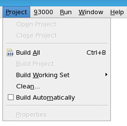

Project menu
The Project menu of the SmarTest Work Center contains the controls for opening, cleaning and building projects.

Menu |
Function/Tool |
|---|---|
Open Project |
Shows a dialog that can be used to select a closed project and open it. |
|
Close Project |
Closes the currently selected projects. |
Build All |
Builds all projects in the workspace. Incremental build - the builder analyzes the changes since the last time of build and minimizes the number of changed files. |
|
Build Project |
Builds the currently selected project. Incremental build - the builder analyzes the changes since the last time of build and minimizes the number of changed files. |
|
Build Working Set |
Builds the projects contained in the currently selected working set. Incremental build - the builder analyzes the changes since the last time of build and minimizes the number of changed files. |
Clean |
Shows a dialog where the projects to be cleaned can be selected. |
|
Build Automatically |
If selected, all saved, modified files are automatically rebuilt. Incremental build - the builder analyzes the changes since the last time of build and minimizes the number of changed files. |
Properties |
Opens the property pages on the currently selected project. |
Functional changes
- Introduced in SmarTest 7.5.4